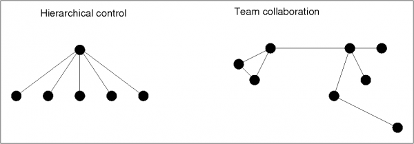

Teamwork
What is team-work?
Team work is a collaboration between individuals with different skills. It is key element in decentralized organization – both for humans and computers.
Teams exist for efficiency (divide and conquer by skill) and also because because humans need continual motivation and emotional support which sustains work-flow and adds creativity to work.
The team-aspect of management is often overlooked in favour of top-down hierarchical design (do what the boss tells you). CFEngine does not force us into hierarchical systems however; the team analogy is more appropriate for CFEngine's model of voluntary cooperation.
IT management is complex, so it makes sense to delegate responsibility for different issues. An organization will generally consist of many groups and teams already, each with their own special needs and each craving its own autonomy. CFEngine and promise theory were designed for precisely this kind of environment. CFEngine allows cooperation and sharing without allowing central managers to ride roughshod over local needs.
Teams thrive by discussion and interaction within the framework of a policy or vision, allowing variation and arriving at a consensus when necessary. Success in a team depends on a combination of abilities working together not undermining one another. Conflicts in the promises made by team members reveal design problems in the group. An analysis of promises (CFEngine's model of collaboration) is a significant tool for understanding and enabling teams.
Team work and policy design for inter-host cooperation are closely related. Use promises as a tool to explain to the individuals in a team which individual is responsible for what role, and to what extent.
Creative roles
M. Belbin, a researcher in teamwork has identified nine abilities or roles (kinds of promise) to be played in a team collaboration (regardless of how many people there are in the team):
Plant – a creative “ideas” person who solves problems.
Shaper – this is a dynamic member of the team who thrives on pressure and has the drive and courage to overcome obstacles.
Specialist – someone who brings specialist knowledge to the group.
Implementer – a practical thinker who is rooted in reality and can turn ideas into practice (who sometimes frustrates more imaginative high flying visionaries).
Resource Investigator – an enabler, or someone who knows where to find the help the team needs regardless of whether the help is physical, financial or human. This person is good at networking.
Chairman/Co-ordinator – an arbitrator who makes sure that everyone gets their say and can contribute.
Monitor-Evaluator – is a dispassionate, discerning member who can judge progress and achievement accurately during the process.
Team Worker – someone concerned with the team's inter-personal relationships and who is sensitive to the atmosphere of the group.
Completer/Finisher – someone critical and analytical who looks after the details of presentation and spots potential flaws and gaps. The completer is a quality control person.
His model leaves little room for technical workflow arguments. It is entirely concerned with the creative process. This is probably significant. We should ask ourselves: how can we use the freedom to organize into specialized teams to maximize human creativity, while passing hard work over to machines. Solving this problem is what CFEngine is about.
Delegating roles in a collaboration
We need to delegate responsiblity to divide and conquer a problem, both when designing policy for computers and when making work schedules for humans. But how can we be certain different parties will not interfere with one anothers' responsibilities? The bottom line is that we cannot be certain without oversight and coordination.
Promise theory shows that coordination needs a single point of coordination to
be the arbiter of correctness in any collaborative process: a so-called
checkpoint' orteam leader', like passport control at an airport. This
checkpoint has to examine each contribution to the team and look for conflicts.
For humans, this might be a matter of communication by meeting. CFEngine, on the other hand, has no built-in meta-access control mechanism which can decide who may write policy rules. To create such a mechanism, there would have to be a monitor which could identify users, and an authority mechanism that would disallow certain users to write rules of certain types about certain objects on certain hosts.

CFEngine Community Edition has roles promises, which offer a partial solution, but it does not address the core issue which is that collaboration in change requires freedom to act, not restriction. Delegation therefore requires trust. CFEngine Nova/Enterprise has `hubs' which can be coordinate large numbers of hosts. Coordination can also be pre-arranged as policy, so that everyone has their own copy of the script. This is how an orchestra scales, for instance.
To keep matters as simple as possible, CFEngine avoids this kind of technical coordination as much as possible and proposes a different approach, using policy along with a social contract between the collaborating teams. Promise theory allows us to model the collaborative security implications of this (see the figure of the bow-tie structure). A simple method of delegating is the following.
Delegate responsibility for different issues to admin teams 1,2,3, etc.
Make each of these teams responsible for version control of their own configuration rules.
Make an intermediate agent responsible for collating and vetting the rules, checking for irregularities and conflicts. This agent must promise to disallow rules by one team that are the responsibility of another team. The agent could be a layer of software, but a cheaper and more manageable solution is the make this another group of one or more humans.
Make the resulting collated configuration version controlled. Publish approved promises for all hosts to download from a trusted source.
A review procedure for policy-promises is a good solution if you want to delegate responsibility for different parts of a policy to different sources. Human judgement as the `arbiter' is irreplaceable, but tools can be added to make conflicts easier to detect.
Promise theory underlines that, if a host or computing device accepts policy from any source, then it is alone and entirely responsible for this decision. The ultimate responsibility for the published version policy is the vetting agent. This creates a shallow hierarchy, but there is no reason why this formal body could not be comprised of representatives from the multiple teams.
The figure below shows how a number of policy authoring teams can work together safely and securely to write the policy for a number of hosts, by vetting through a checkpoint, in a classic `bow-tie' formation.